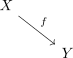

map as factorization of a homotopy equivalence and serre fibration
1. Proposition
Let  be topological spaces and
be topological spaces and  a continuous map.
Then there exists a factorization
a continuous map.
Then there exists a factorization

where
Let be topological spaces and a continuous map.
Then there exists a factorization

where